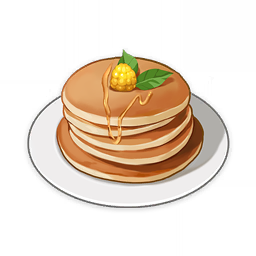

Tea Break Pancake

Description
A stack of round pancakes. A staple originating from afternoon tea in manors. Only the best berries should be picked for this dish.
Ingredients
- 3 Berries
- 2 Flour Sacks
- 1 Bird Egg
Steps
- Head to the nearest stove or campfire.
- Cook the dish!
- When your character dies in battle, consume this dish to revive them and restore 400 HP.